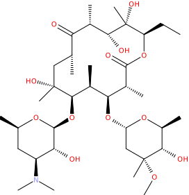
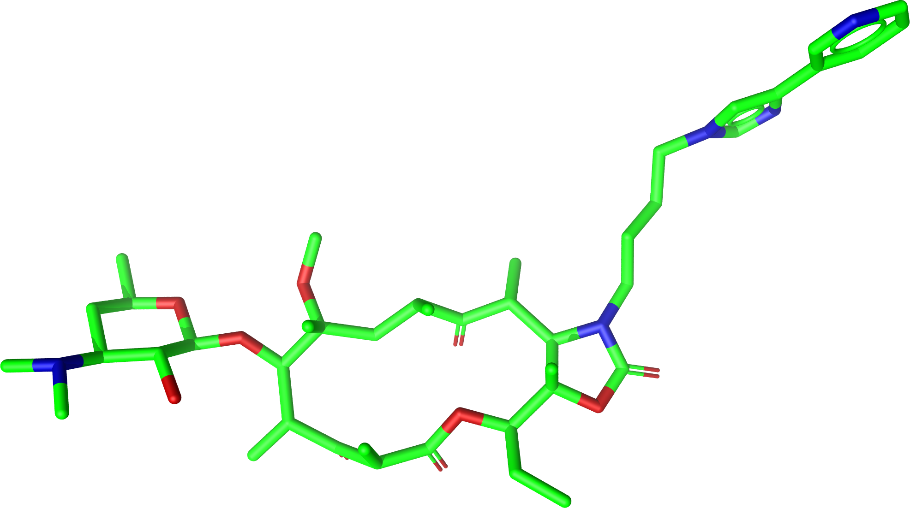

confgen
The program confgen has been published under the name CONFORGE and generates high-quality conformer ensembles for a set of given input molecules. Details regarding the implementation and performance of CONFORGE can be found in [5].
Built-in torsion rules are based on the torsion library V3.0 developed by the University of Hamburg, Center for Bioinformatics, Hamburg, Germany and F. Hoffmann-La-Roche Ltd., Basel, Switzerland [12, 13, 14].
Synopsis
confgen [-hVvptRHAuSszYMWUa^] [-c arg] [-l arg] [-f arg] [-C arg] [-m arg] [-e arg [arg]…] [-r arg [arg]…] [-n arg [arg]…] [-N arg] [-d arg] [-q arg] [-D arg] [-E arg] [-T arg] [-X arg] [-L arg] [-x arg] [-y arg] [-Z arg] [-P arg] [-w arg] [-k arg] [-K arg] [-B arg] [-b arg] [-g arg] [-G arg] [-I arg] [-O arg] [-F arg] [-j arg] [-J arg] [-~ arg] [-Q arg] -i arg [arg]… -o arg
Mandatory options
-i [ –input ] arg
Specifies one or more input file(s) with molecules for which conformers have to be generated.
- Supported Input Formats:
JME Molecular Editor String (.jme)
MDL Structure-Data File (.sdf, .sd)
MDL Molfile (.mol)
Daylight SMILES String (.smi)
IUPAC International Chemical Identifier (.inchi, .ichi)
Native CDPL-Format (.cdf)
Tripos Sybyl MOL2 File (.mol2)
Atomic Coordinates XYZ File (.xyz)
Chemical Markup Language Format (.cml)
GZip-Compressed Chemical Markup Language Format (.cml.gz)
BZip2-Compressed Chemical Markup Language Format (.cml.bz2)
GZip-Compressed MDL Structure-Data File (.sdf.gz, .sd.gz, .sdz)
BZip2-Compressed MDL Structure-Data File (.sdf.bz2, .sd.bz2)
GZip-Compressed Native CDPL-Format (.cdf.gz)
BZip2-Compressed Native CDPL-Format (.cdf.bz2)
GZip-Compressed Daylight SMILES String (.smi.gz)
BZip2-Compressed Daylight SMILES String (.smi.bz2)
GZip-Compressed Tripos Sybyl MOL2 File (.mol2.gz)
BZip2-Compressed Tripos Sybyl MOL2 File (.mol2.bz2)
CDPL Conformer Generator Fragment Library Format (.cfl, .cdf)
-o [ –output ] arg
Specifies the output file where the generated conformers will be stored.
- Supported Output Formats:
MDL Structure-Data File (.sdf, .sd)
MDL Molfile (.mol)
Native CDPL-Format (.cdf)
Tripos Sybyl MOL2 File (.mol2)
Atomic Coordinates XYZ File (.xyz)
Chemical Markup Language Format (.cml)
GZip-Compressed Chemical Markup Language Format (.cml.gz)
BZip2-Compressed Chemical Markup Language Format (.cml.bz2)
GZip-Compressed MDL Structure-Data File (.sdf.gz, .sd.gz, .sdz)
BZip2-Compressed MDL Structure-Data File (.sdf.bz2, .sd.bz2)
GZip-Compressed Native CDPL-Format (.cdf.gz)
BZip2-Compressed Native CDPL-Format (.cdf.bz2)
GZip-Compressed Tripos Sybyl MOL2 File (.mol2.gz)
BZip2-Compressed Tripos Sybyl MOL2 File (.mol2.bz2)
Other options
-h [ –help ] [=arg(=SHORT)]
Print help message and exit (ABOUT, USAGE, SHORT, ALL or ‘name of option’, default: SHORT).
-V [ –version ]
Print version information and exit.
-v [ –verbosity ] [=arg(=VERBOSE)]
Verbosity level of information output (QUIET, ERROR, INFO, VERBOSE, DEBUG, default: INFO).
-c [ –config ] arg
Use file with program options.
-l [ –log-file ] arg
Redirect text-output to file.
-p [ –progress ] [=arg(=1)]
Show progress bar (default: true).
-f [ –failed ] arg
Specifies the output file for molecules where conformer generation failed.
- Supported Output Formats:
JME Molecular Editor String (.jme)
MDL Structure-Data File (.sdf, .sd)
MDL Molfile (.mol)
Daylight SMILES String (.smi)
Daylight SMARTS String (.sma)
IUPAC International Chemical Identifier (.inchi, .ichi)
Native CDPL-Format (.cdf)
Tripos Sybyl MOL2 File (.mol2)
Atomic Coordinates XYZ File (.xyz)
GZip-Compressed MDL Structure-Data File (.sdf.gz, .sd.gz, .sdz)
BZip2-Compressed MDL Structure-Data File (.sdf.bz2, .sd.bz2)
GZip-Compressed Native CDPL-Format (.cdf.gz)
BZip2-Compressed Native CDPL-Format (.cdf.bz2)
GZip-Compressed Daylight SMILES String (.smi.gz)
BZip2-Compressed Daylight SMILES String (.smi.bz2)
GZip-Compressed Tripos Sybyl MOL2 File (.mol2.gz)
BZip2-Compressed Tripos Sybyl MOL2 File (.mol2.bz2)
-t [ –num-threads ] [=arg(=4)]
Number of parallel execution threads (default: no multithreading, implicit value: number of CPUs, must be >= 0, 0 disables multithreading).
-C [ –conf-gen-preset ] arg
Conformer generation preset to use (SMALL_SET_DIVERSE, MEDIUM_SET_DIVERSE, LARGE_SET_DIVERSE, SMALL_SET_DENSE, MEDIUM_SET_DENSE, LARGE_SET_DENSE, default: MEDIUM_SET_DIVERSE).
-m [ –mode ] arg
Conformer sampling mode (AUTO, STOCHASTIC, SYSTEMATIC, default: AUTO).
-e [ –e-window ] arg
Energy window for generated conformers. The energy window may be specified as a single constant value or [since V1.1] as a list of pairs RBC1 EW1 RBC2 EW2… where RBC denotes a rotatable bond count and EW the energy window that applies if the rotatable bond count of the processed molecule is <= RBC (the EW value associated with the lowest RBC that fulfills the latter condition takes precedence). If the rotatable bond count of the processed molecule is outside any defined range then the EW value associated with the highest RBC will be used. (default: 15.0, energy window values must be >= 0).
-r [ –rmsd ] arg
Minimum RMSD for output conformer selection. The RMSD may be specified as a single constant value or [since V1.1] as a list of pairs RBC1 RMSD1 RBC2 RMSD2… where RBC denotes a rotatable bond count and RMSD is the value that applies if the rotatable bond count of the processed molecule is <= RBC (the RMSD value associated with the lowest RBC that fulfills the latter condition takes precedence). If the rotatable bond count of the processed molecule is outside any defined range then the RMSD value associated with the highest RBC will be used. (default: 0.5, RMSD values must be >= 0, 0 disables RMSD checking).
-n [ –max-num-out-confs ] arg
Maximum number of output conformers per molecule. The max. number of output conformers may be specified as a single constant value or [since V1.1] as a list of pairs RBC1 MC1 RBC2 MC2… where RBC denotes a rotatable bond count and MC the max. number of conformers that applies if the rotatable bond count of the processed molecule is <= RBC (the MC value associated with the lowest RBC that fulfills the latter condition takes precedence). If the rotatable bond count of the processed molecule is outside any defined range then the MC value associated with the highest RBC will be used. (default: 100, count values must be >= 0, 0 disables limit).
-N [ –nitrogen-enum-mode ] arg
Invertible nitrogen enumeration mode (NONE, ALL, UNSPECIFIED, default: UNSPECIFIED).
-R [ –enum-rings ] [=arg(=1)]
Enumerate ring conformers (only effective in systematic sampling mode, default: true).
-H [ –sample-het-hydrogens ] [=arg(=1)]
Perform torsion sampling for hydrogens on hetero atoms (default: false).
-A [ –tol-range-sampling ] [=arg(=1)]
Additionally generate conformers for angles at the boundaries of the first torsion angle tolerance range (only effective in systematic sampling mode, default: false).
-u [ –include-input ] [=arg(=1)]
Add input 3D-structure to output conformer ensemble (default: false).
-S [ –from-scratch ] [=arg(=1)]
Discard input 3D-coordinates and generate conformers from scratch (default: true).
-d [ –systematic-search-force-field ] arg
Search force field used in systematic sampling (MMFF94, MMFF94_NO_ESTAT, MMFF94S, MMFF94S_XOOP, MMFF94S_RTOR, MMFF94S_RTOR_XOOP, MMFF94S_NO_ESTAT, MMFF94S_XOOP_NO_ESTAT, MMFF94S_RTOR_NO_ESTAT, MMFF94S_RTOR_XOOP_NO_ESTAT, default: MMFF94S_RTOR_NO_ESTAT).
-q [ –stochastic-search-force-field ] arg
Search force field used in stochastic smapling (MMFF94, MMFF94_NO_ESTAT, MMFF94S, MMFF94S_XOOP, MMFF94S_RTOR, MMFF94S_RTOR_XOOP, MMFF94S_NO_ESTAT, MMFF94S_XOOP_NO_ESTAT, MMFF94S_RTOR_NO_ESTAT, MMFF94S_RTOR_XOOP_NO_ESTAT, default: MMFF94S_RTOR).
-s [ –strict-param ] [=arg(=1)]
Perform strict MMFF94 parameterization (default: true).
-D [ –dielectric-const ] arg
Dielectric constant used for the calculation of electrostatic interaction energies (default: 80.0).
-E [ –dist-exponent ] arg
Distance exponent used for the calculation of electrostatic interaction energies (default: 1.0).
-T [ –timeout ] arg
Time in seconds after which molecule conformer generation will be stopped (default: 3600 s, must be >= 0, 0 disables timeout).
-X [ –max-num-rot-bonds ] arg
Maximum number of allowed rotatable bonds, exceeding this limit causes molecule conf. generation to fail (default: -1, negative values disable limit).
-L [ –max-pool-size ] arg
Puts an upper limit on the number of generated output conformer candidates (only effective in systematic sampling mode, default: 10000, must be >= 0, 0 disables limit).
-x [ –max-num-sampled-confs ] arg
Maximum number of sampled conformers (only effective in stochastic sampling mode, default: 2000, must be >= 0, 0 disables limit).
-y [ –conv-check-cycle-size ] arg
Minimum number of duplicate conformers that have to be generated in succession to consider convergence to be reached (only effective in stochastic sampling mode, default: 100, must be > 0).
-Z [ –mc-rot-bond-count-thresh ] arg
Number of rotatable bonds in a ring above which stochastic sampling will be performed(only effective in sampling mode AUTO, default: 10, must be > 0).
-P [ –ref-tol ] arg
Energy tolerance at which force field structure refinement stops (only effective in stochastic sampling mode, default: 0.001, must be >= 0, 0 results in refinement until convergence).
-w [ –max-ref-iter ] arg
Maximum number of force field structure refinement iterations (only effective in stochastic sampling mode, default: 0, must be >= 0, 0 disables limit).
-k [ –add-tor-lib ] arg
Torsion library to be used in addition to the built-in library (only effective in systematic sampling mode).
-K [ –set-tor-lib ] arg
Torsion library used as a replacement for the built-in library (only effective in systematic sampling mode).
-B [ –frag-build-preset ] arg
Fragment build preset to use (FAST, THOROUGH, only effective in systematic sampling mode, default: FAST).
-b [ –build-force-field ] arg
Fragment build force field (MMFF94, MMFF94_NO_ESTAT, MMFF94S, MMFF94S_XOOP, MMFF94S_RTOR, MMFF94S_RTOR_XOOP, MMFF94S_NO_ESTAT, MMFF94S_XOOP_NO_ESTAT, MMFF94S_RTOR_NO_ESTAT, MMFF94S_RTOR_XOOP_NO_ESTAT, only effective in systematic sampling mode, default: MMFF94S_RTOR_NO_ESTAT).
-g [ –add-frag-lib ] arg
Fragment library to be used in addition to the built-in library (only effective in systematic sampling mode).
-G [ –set-frag-lib ] arg
Fragment library used as a replacement for the built-in library (only effective in systematic sampling mode).
-z [ –canonicalize ] [=arg(=1)]
Canonicalize input molecules (default: false).
-Y [ –energy-sd-entry ] [=arg(=1)]
Output conformer energy in the structure data section of SD-files (default: false).
-M [ –energy-comment ] [=arg(=1)]
Output conformer energy in the comment field (if supported by output format, default: false).
-W [ –conf-idx-suffix ] [=arg(=1)]
Append conformer index to the title of multiconf. output molecules (default: false).
-I [ –input-format ] arg
Allows to explicitly specify the format of the input file(s) by providing one of the supported file-extensions (without leading dot!) as argument. This option is useful when the format cannot be auto-detected from the actual extension of the file(s) (because missing, misleading or not supported).
-O [ –output-format ] arg
Allows to explicitly specify the output format by providing one of the supported file-extensions (without leading dot!) as argument. This option is useful when the format cannot be auto-detected from the actual extension of the file (because missing, misleading or not supported). Note that only storage formats make sense that allow to store atom 3D-coordinates!
-F [ –failed-format ] arg
Allows to explicitly specify the output format by providing one of the supported file-extensions (without leading dot!) as argument. This option is useful when the format cannot be auto-detected from the actual extension of the file (because missing, misleading or not supported).
-j [ –fixed-substr ] arg
Fixed substructure template molecule file. The given molecule can serve as source for fixed substructure atom 3D coordinates and also as query for finding fixed substructure matches in the processed input molecules if a SMARTS pattern has not been specified by option –fixed-substr-ptn. If the template molecule file does not provide atom 3D coordinates then the coordinates of matched input molecule atoms will be used (if 3D coordinates are not provided either way an error will be reported). [since V1.1]
-J [ –fixed-substr-ptn ] arg
SMARTS pattern for finding fixed substructure matches in the processed input molecules. If a template molecule file has been specified by option –fixed-substr then matching atoms of that molecule will serve as primary source for fixed atom 3D coordinates. Otherwise, the coordinates of matched input molecule atoms will be used (if 3D coordinates are not provided either way an error will be reported). [since V1.1]
-U [ –fixed-substr-mcss ] [=arg(=1)]
Use maximum common substructure search to find fixed substructure matches (default: false, using reqular substructure searching). [since V1.1]
-a [ –fixed-substr-align ] [=arg(=1)]
Align generated conformers on fixed substructure input atom positions (default: false). [since V1.1]
-~ [ –fixed-substr-min-atoms ] arg
The minimum required number of matched atoms when using maximum common substructure searching to find fixed substructure matches (default: 2). [since V1.1]
-Q [ –fixed-substr-max-matches ] arg
The maximum number of considered fixed substructure matches (default: 1, 0 disables limit). [since V1.1]
-^ [ –fixed-substr-ignore-h ] [=arg(=1)]
Ignore hydrogens that are present in the specified fixed substructure template molecule file (default: false). [since V1.1]
Notes on release V1.1
Improvements
For systematic conformer sampling confgen V1.1 uses a new torsion library that was derived from the torsion library V3.0 developed at the University of Hamburg, Center for Bioinformatics [14]. The new torsion library offers significant improvements over its predecessor which originate in corrections of torsion library entry matching orders and a higher number of analyzed high quality X-ray structures. Furthermore, the output conformer picking procedure has been refined and now results in not only structurally, but also energetically more diverse conformer ensembles. Together these changes increase the average accuracy in the reproduction of experimental structure considerably (at the cost of slightly larger output ensembles and higher processing times for some settings). In order to quantify the accuracy improvements the Platinum Diverse Dataset benchmarks described in [5] were re-run and the obtained results put in comparison with the ones published for CONFORGE V1.0. The following tables show that the achieved accuracy improvements can be significant, especially when confgen is run with default settings:
Generator [1] |
Maximum ensemble size 50 |
Maximum ensemble size 250 |
||||||
|---|---|---|---|---|---|---|---|---|
mean |
median |
min |
max |
mean |
median |
min |
max |
|
RMSD (Å) |
||||||||
CONFORGE Systematic Best V1.0 |
0.67 |
0.49 |
0.03 |
3.92 |
0.55 |
0.41 |
0.03 |
3.67 |
CONFORGE Systematic Best V1.1 |
0.61 |
0.48 |
0.03 |
3.90 |
0.52 |
0.40 |
0.03 |
3.61 |
CONFORGE Systematic Default V1.0 |
0.68 |
0.55 |
0.04 |
3.14 |
0.61 |
0.52 |
0.04 |
2.79 |
CONFORGE Systematic Default V1.1 |
0.63 |
0.52 |
0.03 |
3.70 |
0.56 |
0.48 |
0.03 |
3.70 |
Others |
0.67 |
0.51 |
0.02 |
3.26 |
0.57 |
0.46 |
0.02 |
2.93 |
Ensemble Size |
||||||||
CONFORGE Systematic Best V1.0 |
39 |
50 |
- |
- |
149 |
214 |
- |
- |
CONFORGE Systematic Best V1.1 |
40 |
50 |
- |
- |
154 |
250 |
- |
- |
CONFORGE Systematic Default V1.0 |
29 |
30 |
- |
- |
83 |
30 |
- |
- |
CONFORGE Systematic Default V1.1 |
31 |
37 |
- |
- |
92 |
38 |
- |
- |
Others |
21 |
19 |
- |
- |
71 |
32 |
- |
- |
Processing Time |
||||||||
CONFORGE Systematic Best V1.0 |
0.16 |
0.02 |
0.00 |
14.3 |
0.33 |
0.07 |
0.00 |
16.08 |
CONFORGE Systematic Best V1.1 |
0.16 |
0.02 |
0.00 |
12.98 |
0.31 |
0.09 |
0.00 |
26.46 |
CONFORGE Systematic Default V1.0 |
0.09 |
0.01 |
0.00 |
19.79 |
0.21 |
0.01 |
0.00 |
19.94 |
CONFORGE Systematic Default V1.1 |
0.09 |
0.01 |
0.00 |
10.72 |
0.26 |
0.02 |
0.00 |
14.74 |
Others |
0.53 |
0.17 |
0.00 |
30.98 |
0.65 |
0.27 |
0.00 |
31.13 |
Generator [1] |
Maximum ensemble size 50 |
Maximum ensemble size 250 |
|---|---|---|
CONFORGE Systematic Best V1.0 |
00:08:56 |
00:20:06 |
CONFORGE Systematic Best V1.1 |
00:08:49 |
00:19:30 |
CONFORGE Systematic Default V1.0 |
00:05:21 |
00:12:49 |
CONFORGE Systematic Default V1.1 |
00:05:02 |
00:15:07 |
Others |
00:26:07 |
00:33:44 |
Generator [1] |
Maximum ensemble size 50 |
Maximum ensemble size 250 |
||||||
|---|---|---|---|---|---|---|---|---|
0.5 |
1.0 |
1.5 |
2.0 |
0.5 |
1.0 |
1.5 |
2.0 |
|
CONFORGE Systematic Best V1.0 |
51.6 |
79.2 |
90.6 |
96.4 |
59.7 |
86.8 |
95.2 |
98.4 |
CONFORGE Systematic Best V1.1 |
51.5 |
83.3 |
93.7 |
98.3 |
61.3 |
89.3 |
96.5 |
99.2 |
CONFORGE Systematic Default V1.0 |
44.6 |
80.5 |
92.7 |
97.3 |
47.5 |
85.8 |
95.8 |
99.0 |
CONFORGE Systematic Default V1.1 |
48.0 |
83.4 |
95.4 |
99.2 |
52.2 |
89.0 |
97.8 |
99.8 |
Others |
49 |
80.8 |
93.2 |
98.4 |
56 |
87 |
96.5 |
99.4 |
New features
Energy window, RMSD and max. output ensemble size as a function of rotatable bond count
It is now possible to specífy multiple values for energy window (option –e-window), RMSD threshold (option –rmsd) and max. output ensemble size (option –max-num-out_confs). Which of the specified values takes effect depends on the rotatable bond count of the currently processed input molecule. Rotatable bond count dependent settings are specified as a list of pairs RBC1 SV1 RBC2 SV2… where RBC denotes the rotatable bond count and SV the value that applies if the rotatable bond count of the processed molecule is <= RBC. The settings value associated with the lowest RBC that fulfills the latter condition takes precedence. If the rotatable bond count of the processed molecule is outside any defined range then the settings value associated with the highest RBC will be used.
Example: 5 50 10 100 12 200
In this example a rotatable bond count of 6 leads to the selection of the value 100. Rotatable bond counts <= 5 result in the value 50 and any rot. bond count > 10 in the value 200.
Support for ‘fixed’ substructures
Starting with version 1.1 confgen supports the specification of substructures that have to be kept ‘fixed’ during conformer generation. Fixed substructure atom 3D coordinates can be supplied via a template molecule file (option –fixed-substr) or are taken from the processed input molecules. For a maximum of flexibility SMARTS patterns can be specified (–fixed-substr-ptn option) that allow for a detailed and accurate description of the substructures to keep fixed. Available algorithms for finding matches between the input molecules and the specified substructure are standard substructure searching (the default) and maximum common substructure searching (MCSS, enabled by option –fixed-substr-mcss). Further options control the number of considered fixed substructure matches (option –fixed-substr-max-matches), the minimum matched substructure size (if MCSS is enabled, option –fixed-substr-min-atoms) and whether the generated conformers shall be aligned on fixed substructure input atom positions (option –fixed-substr-align, by default conformers are not aligned!).
Example:
Generation of a conformer ensemble for Erythromycin where the maximum common substructure with
Telithromycin is kept rigid and atom 3D coordinates taken from the active conformation of Telithromycin
in complex 1P9X are used as fixed atom positions.
Erythromycin: |
Bound-state conformation of Telithromycin in complex 1P9X: |
|  |  |
{kind=link}
{kind=link}
Executing
$ confgen -i erythromycin.smi -o tel_ery_confs.sdf -m stochastic -n 50 -j 1p9x_B_TEL.sdf -a -U
will generate the following conformer ensemble:
{kind=link}
Conformations of Erythromycin generated with a fixed substructure derived from Telithromycin (shown for reference in green)